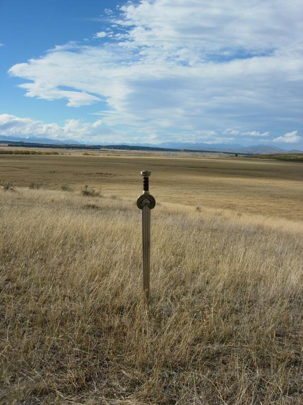
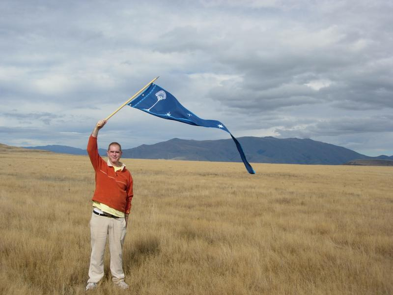
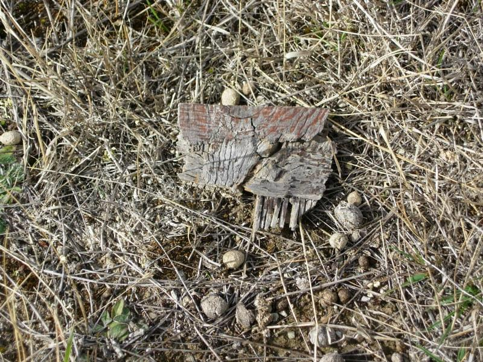
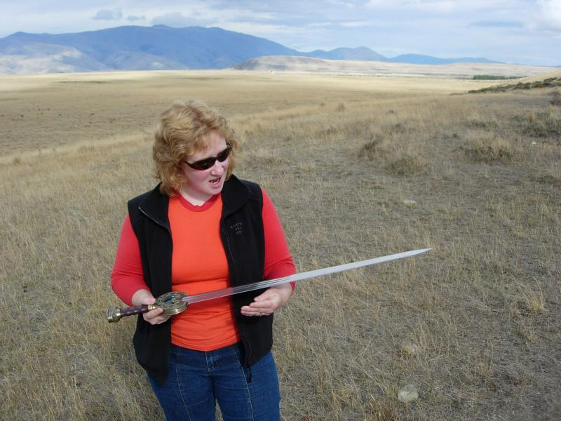
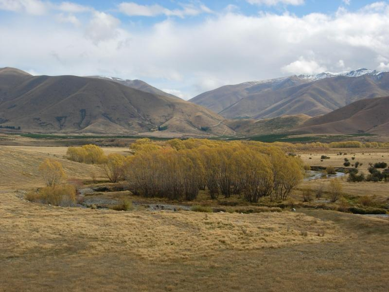
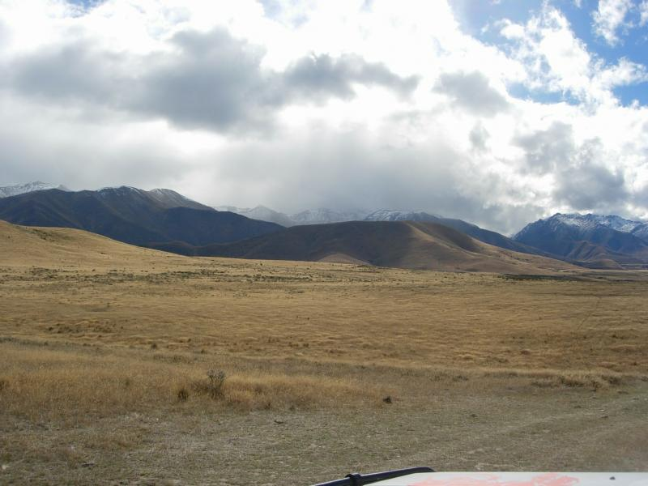
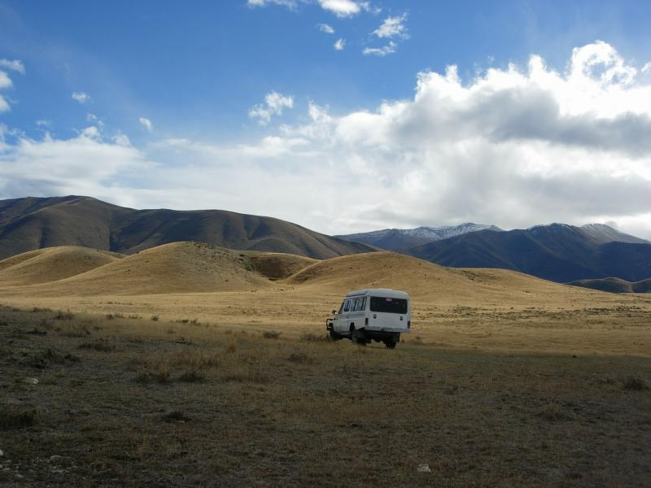
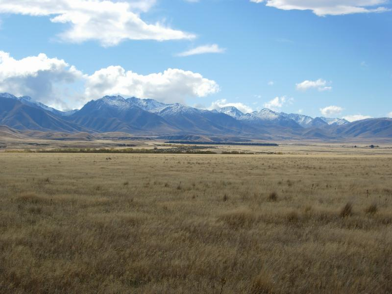
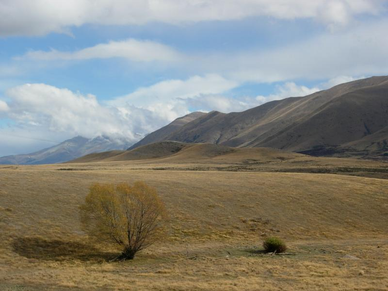
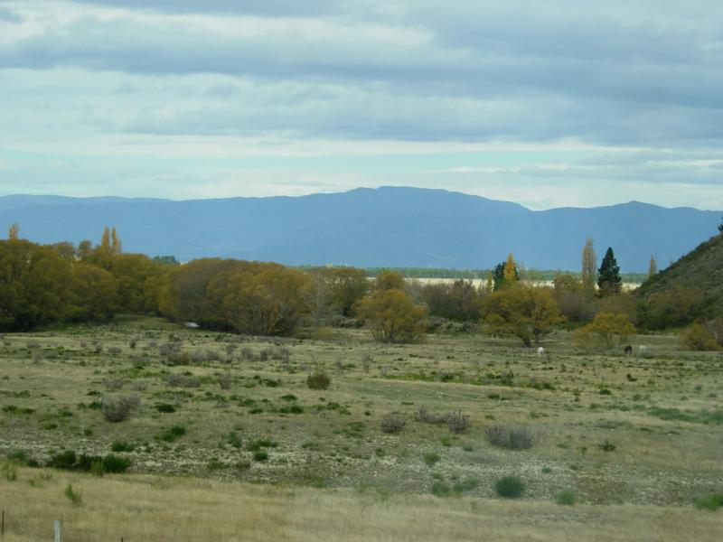

Twizel

Pelennor Fields is on the Ben Ohua Station sheep farm. The tour company that takes you there made this replica of Herugrim. In the early days, execs from New Line came through to make sure no replicas were being made, copyrights being infringed on, and in general that no one made money but New Line.
Studios are evil. PJ recently sued New Line over overstated production costs and won. Did you know that "Tolkein" is a trademark owned by Saul Zaentz? Warner Brothers, New Line Productions and The Saul Zaentz Company claim a right to any domain name containing the word "shire". In particular, they wish to take the domain name "shiremail.com" from the email business that currently uses it
On the other hand, Christopher Tolkein dismissed his son Simon from the Tolkien Foundation board, effectively disinheriting him, for seeing the movie. Which Christopher swore never to see. “I never saw the films as a threat and I’ve enjoyed the movies for what they are, but I crossed my father on a Tolkien issue ... he will never speak to me again as long as he lives, he will never see my children and will never have anything to do with me.”
So where are the good guys?

Right here, with flag of Gondor. Mountains from the Southern Alps were digitally pasted over theses hills to create the White Mountains around Gondor.

Discovered this artifact--remnants of some prop from the battle scene.

Tour guide with sword. This lady knew so much I wished I'd brought a notepad...had to reconstruct a couple of hours of info in notes in a cafe in town after. She also brought a DVD player cued to the right scenes to show what happened where, and how the scenery and actors had been CGId in postproduction. Two of the actors have written memories, Sean Astin (Sam) and Andy Serkis (Gollum). What a difference! Serkis is cool and professional in tone, while Astin is one raw nerve ("Peter never listened to my ideas!" "I'm such an asshole, I betrayed Peter!") She found Astin's borderline-hysterical style just too un-Kiwi anddidn't make it through the book. Kiwis may no longer be English prim and proper, but they hate public emotion. (Both of Astin's parents are actors. Astin's mother was bipolar; don't think he inherited the genes, but he evidently learned the style.)
The lady is an insider. Not only was she around for the shooting, but she's taken the actors, New Line execs, and WETA guys on tour, and gotten a lot of info. Here's the scoop. The tour people in Queenstown thought that PJ couldn't make the Hobbit because the ownership was split between two different groups. She was able to tell me that PJ emerged from the New Line suit with full rights to the Hobbit. He now plans to make Lovely Bones, then HALO (based on the game), then the Hobbit.

Gandalf crossed this creek on horseback carrying Pippin after the episode with the Palantir. The creek is actually about 3m wide, but PJ shot the scene with the camera near the ground, visually stretching it into a river.

This picture doesn't show it well, but the road the jeep is on was created by the film crew to bring in horses and props, and for the camera to run along. Eight large supply trucks contained the props and did markup. In addition to the main actors, PJ brought in a professional cavalry team from the US along with their horses. He recruited all the locals he could get (many of the riders are farmer's wives in helmets). When that wasn't enough, he drove an hour north to a military base and got 200 soldiers to come down. (The stuntmen hated that because these guys didn't pull punches.) And when that wasn't enough, he went around knocking on hotel doors to recruit tourists as orcs.

The Rohirrim were lined up at the top of the central hill. PJ wanted them to charge downhill, but the hill proved too steep. So he photographed them lined up along the hill, then you see Theoden's head in motion as the charge begins, then they're at the bottom of the hill. They never actually went down. The long line of Rohirrim you see was a shorter line that was copied and pasted (on the right side of the line where it receeds in the distance).
Theoden's speech and the clashing of swords was Bernard Hill's idea. PJ hadn't planned to film that, but when Hill suggested it, he said "Show me what you can do." According to the youngest local on the set, Kieren (17), the performance's power doesn't come through on the screen, but was breathstoping in person. He's in awe of what Hill was able to project. (He also said that Eowin's lament for Theodred made the hairs on his neck stand up, but the power doesn't come across on the screen.) Then Jackson said "Do it again while facing the camera!". In all, there were 15 takes. Facing the camera forced Hill to take the sword in his weak hand (the right). For a couple of takes he used a lightweight prop sword, but it bent under the force of being slammed, so he ended up doing it repeatedly with a full-weight replica.
The muster of the Rohirrim took place on the far side of the foreground hills. An engineer pointed out that the book mentioned the Rohirrim riding in the rain, and in the moonlight, so PJ filmed both. They got Kieren up at midnight to film the moonlight ride, but it ended up among the 500 hours of footage that didn't make the cut. (He was pissed, it cost him to do that and still have his armor clean and ready for shooting the next morning).
Extras got paid the equivalent of US$75 per day. This was love, not money.

The battle was filmed by having the orcs line up in rows, and the cavalry charge between the rows. First time, 12 of the orc extras broke ranks and ran. Took 'em a while to believe that the horses weren't going plow 'em down. Some of the horses were imported, some were locals, and several fought. They were placed at opposite ends of the charge. The farm horses couldn't keep up with the cavalry, so the charge took place at a canter, which explains the up-and-down motion you see on the rider's heads, rather than the forward-and-back of a gallop. But Eomer's horse was so competitive that it galloped away. You see head shots of him riding on an oil drum being pulled along by a truck--which he found too humiliating. Later WETA made him the "phony pony" that mechanically emulates the motion of a cantering horse, so the head shots came out OK.
The Mumakil were CGI, as were the falling riders. The orcs were arranged with holes in the ranks to make room for them to be added later. At a trial screening, the Rohirrim downed so many Mumakil that the audience started to sympathize with the wrong side. So PJ told WETA "kill more riders". For the melee scenes, PJ had small groups fight while the camera wandered around taking closeups to be edited into a battle later. WETA made 30 dead horses to scatter around. (There was also a dead Mumakil, but it took 18 trucks to move it. Don't think they ended up using it.)

Gandalf shouldn't have had Pippin on his horse while charging Angmar. Pippin was a soldier of Gondor by then, and had remained to fight at Minas Tirith. PJ shot this scene first, then decided that for people who hadn't read the books, it was necessary to explain the tension between Faramir and Denethor, so he added the scene where Pippin was sworn. He's aware of the glitch, but decided he didn't have the time or budget to redo the shot.
You'll notice that when Theoden goes down, you see his head laying on hay, not the turf shown here. PJ decided he didn't like any of the dying-Theoden footage, so he reshot the scene in a parking lot in Wellington.

Kieren's horse Rocky is the bay on the left. The locals pointed out to PJ that he'd better fill in all the rabbit holes before charging horses across the field. The crew spent a week filling them in with sand before filming began. PJ was very concerned about the health of the horses and had full-time on-site vet giving them checkups. (There were no horse injuries.) Professional rodeo riders were brought in from the US to tend the horses and catch any runaways.
The battle took 52 takes over 12 days. Extras got up at 4:30 for armor and makeup, and didn't make it to bed until 10PM. The Gondorian armor cost NZ$4,500 per soldier. The orcs spent all day encased in hot smelly latex that got really nasty inside (like latex gloves). One of the locals was assigned to "orc watering" with a sip bottle that fit throught the masks. One orc said "Thanks Dad". It was tough for the locals to recognize each other, and I'm told that several acts of private revenge took place during the shooting.
There was an "orc school" were orcs were taught to run while half-crouched. They were required to stand that way all the time, because PJ had seen some classic samurai movie where the guys in back were too far to hear "Action" and were seen standing out of chacter when the front lines moved out.